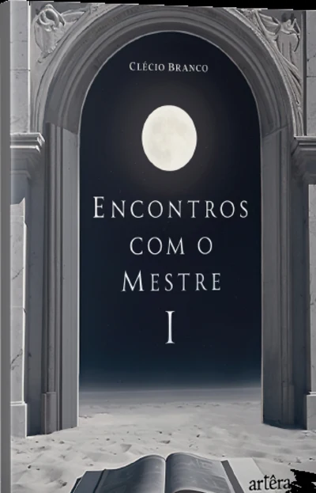
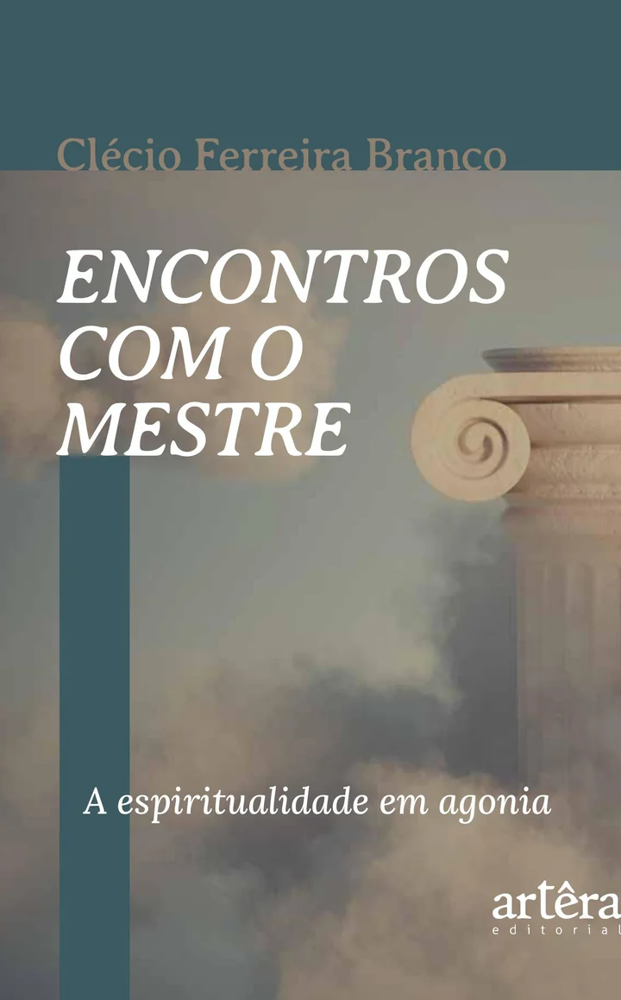

Série Encontros com o Mestre · Editora Appris
Recupere o fôlego da alma num mundo que não para
A série de Clécio Branco que devolve silêncio, sentido e esperança a quem anda espiritualmente cansado. Volume II recém-lançado.
filosofia acessível e fé pensada · do autor de Isso Não É Um Chapéu
Começar a ler agora Leia uma amostra grátis no Kindle

Você se reconhece?
Você não perdeu a fé. Perdeu o silêncio.
Sente que reza, medita ou vai ao culto no piloto automático
Anda cansado de um mundo que transformou até a fé em vitrine
Já se pegou pensando se a vida espiritual ainda faz sentido hoje
Quer profundidade, mas não aguenta mais fórmulas prontas
Sente falta de uma pausa de verdade, sem culpa e sem pressa
Se você assentiu a qualquer uma dessas frases, esta série foi escrita para você. Não é autoajuda. É um reencontro: com o silêncio, com o pensamento e com a esperança.
Há um caminho de volta. Ele começa numa pausa.
Um gosto do livro
A voz que vai acompanhar você
Ao chamá-lo de senhor do silêncio, é necessário recordar que Ele falou muito pouco de si mesmo, como um rio que não bebe a sua própria água ou uma frondosa árvore que não desfruta da sua sombra.
Volume II · capítulo 1 · O Mestre do silêncio iA esperança pode vir de muitos lugares: de palavras ditas no momento certo, da leitura de um livro ou de acontecimentos ao acaso. Algo que nos alcança com efeito grandioso e nos faz brilhar outra vez.
Volume II · introdução iiA série
Uma série, dois encontros
Volume I · 2024
Pausa para Reflexão
O convite ao silêncio. Resgata o valor da pausa, do rito e da escuta num mundo que não para.
Quero o Volume IVolume II · Lançamento 2026
A espiritualidade em agonia
O que resta da vida espiritual num tempo que põe tudo à venda, e onde mora a esperança. Em diálogo com Agonia de Eros, de Byung-Chul Han.
Quero o Volume IIDentro do Volume II
Nove capítulos que olham para o nosso tempo com os olhos do Mestre
- IO que o senhor do silêncio ensina a quem vive no ruído
- IIO rito esquecido que os cansados de hoje mais precisam resgatar
- IIIOnde termina o sagrado e começa o mercado
- IVNicodemos, ou como nascer de novo depois de adulto
- VQuando a vida não faz sentido, e ainda assim vale a pena
- VIA liberdade da qual ninguém escapa: somos condenados a escolher
- VIICrer sem desligar a razão: o empirista da fé
- VIIIO que o Mestre diria sobre o seu dinheiro
- IXO pavor do estranho, e o acolhimento que cura
"Vivemos na cultura da embalagem, que despreza o conteúdo."Eduardo Galeano · epígrafe da conclusão
Para quem é
Um livro para leitores inquietos
Este livro é para você que
- Sente a vida espiritual sufocada pela pressa e pelo barulho
- Gosta de filosofia acessível: Han, Bauman e Camus em diálogo com o Evangelho
- Cansou de ver a fé tratada como produto
- Busca uma espiritualidade pensante, com esperança e sem ingenuidade
Este livro não é
- Um manual de autoajuda com fórmulas prontas
- Um tratado teológico para especialistas
- Um livro de promessas de prosperidade
- Leitura rasa para passar o tempo
Perguntas frequentes
Antes de começar
Preciso ler o Volume I antes?
É um livro religioso?
É uma leitura difícil?
Em que formatos existe?
Onde comprar
Comece pelo encontro que chamar você
Ainda em dúvida? Abra a amostra grátis no Kindle e leia as primeiras páginas agora mesmo. E um segredo entre leitores: quem leva os dois entende por que a pausa prepara a esperança.
Um murmúrio resistente no tumulto do mundo
A esperança não grita. Ela reconcilia, une e alia. Este é o convite dos Encontros com o Mestre: recuperar, página a página, um modo próprio de estar no mundo.
Livro físico e Kindle · Editora Appris